6 步完成 Kimi K2.7-code 模型调用权限配置 | 含 13 张实操截图
百炼控制台（选择地域）：
本指南所有路径均基于阿里云国际站（alibabacloud.com）。国际站账号体系、计费、API 端点与大陆站（aliyun.com）不互通。
httpCode: 403，AccessDenied.Unpurchasedkimi-k2.7-code 模型时触发。
"You do not have access permissions to this workspace, or the workspace does not exist"两个错误的根因都指向业务空间授权缺失，解决方案见第二章与第三章。
kimi-k2.7-code 配置 RAM 子账户调用权限。所用控制台为国际站百炼（bailian.console.alibabacloud.com/cn-beijing，华北2 北京节点）。完整概念与字段说明见官方文档《百炼权限管理》。
主账号登录 RAM 控制台 → 身份管理 → 用户 → 创建用户。
用户名称示例：kimi-k2.7-code_RAM-Test（最多 64 字符，支持英文、数字、下划线、连字符、点号）。勾选使用控制台访问。
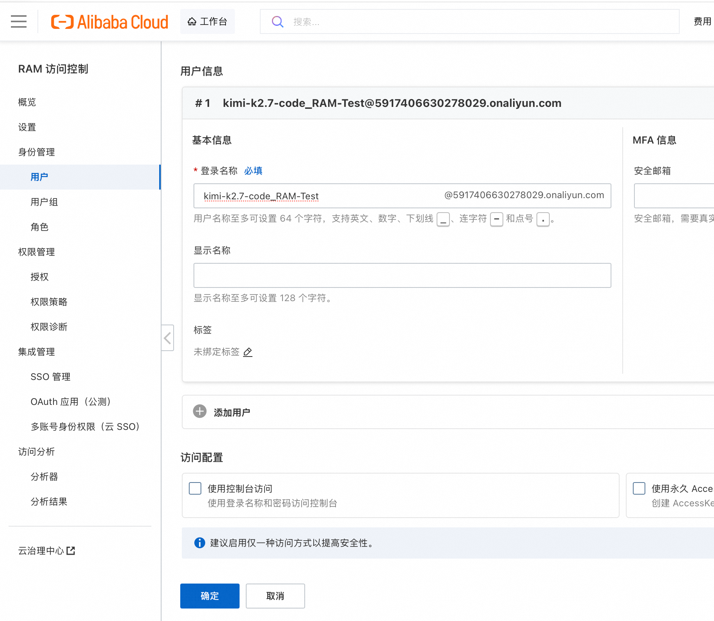
在 RAM 控制台为目标用户新增授权，搜索并勾选以下策略：
| 权限策略 | 说明 | 是否必须 |
|---|---|---|
AliyunBailianFullAccess |
百炼平台超级管理员，可跨业务空间管理 | ✅ 必须 |
AliyunBSSOrderAccess |
购买预付费模型时使用 | ⚠️ 按需 |
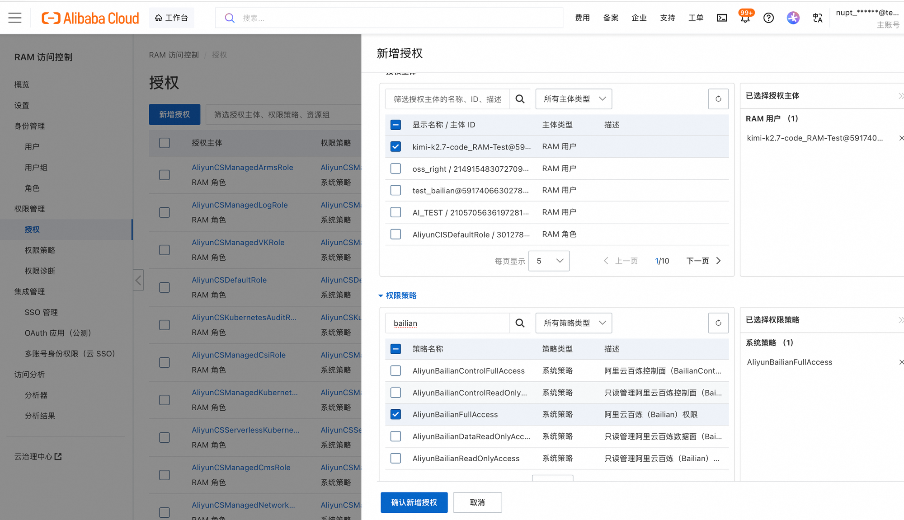
AliyunBailianFullAccess返回 RAM 用户详情 → 认证管理 → 启用控制台登录：
kimi-k2.7-code_RAM-Test → 认证管理 → 启用控制台登录
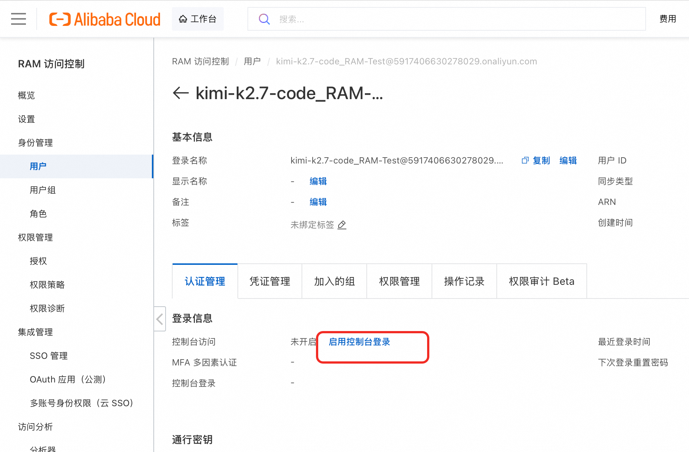
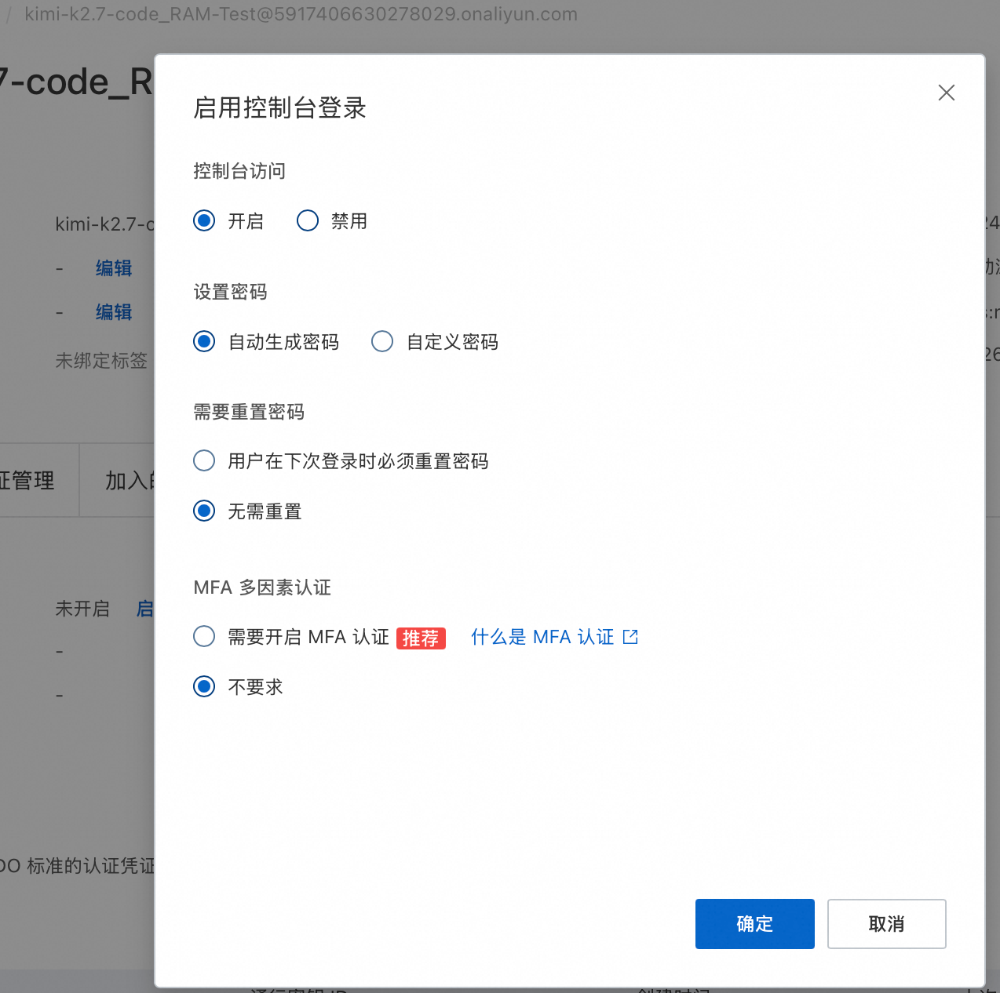
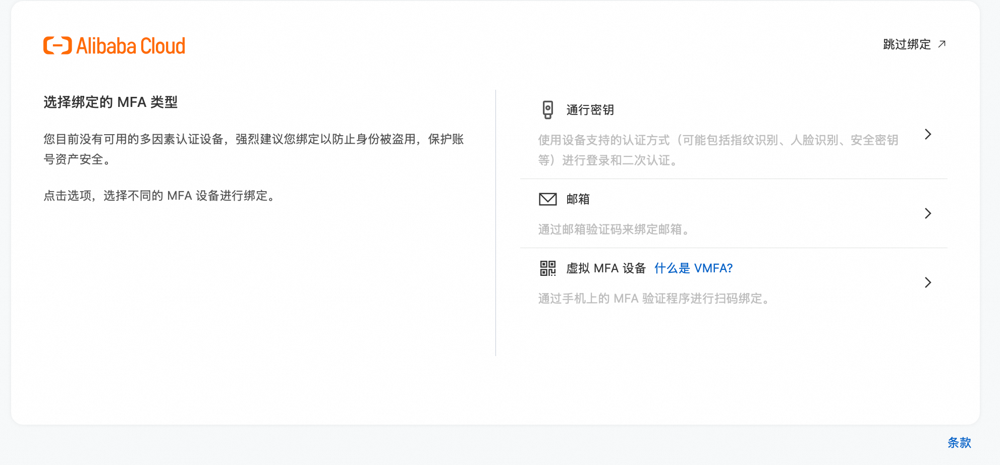
主账号访问 百炼控制台（业务空间管理），点击新增业务空间，输入名称 kimi-k2.7-workspace，地域默认华北2（北京）。
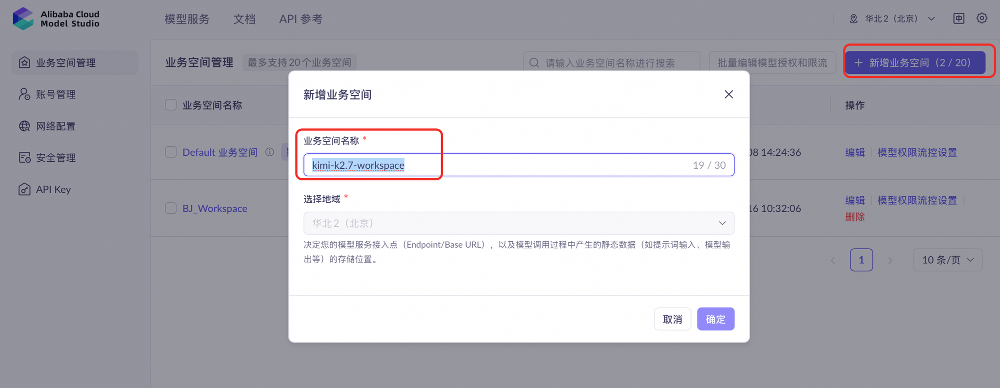
kimi-k2.7-workspaceDefault 业务空间，其内置所有模型授权。最多创建 20 个业务空间。
进入 kimi-k2.7-workspace → 模型列表 → 搜索 kimi，找到 kimi-k2.7-code → 打开模型调用开关 → 保存。
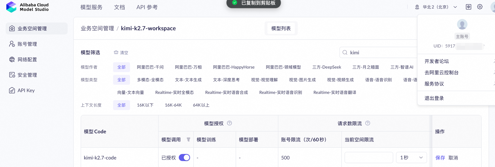
kimi-k2.7-code 模型调用开关打开后变为"已授权"在 kimi-k2.7-workspace → 账号管理 → 新增用户：
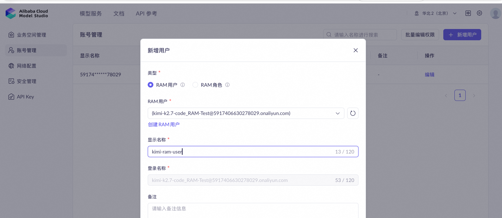
kimi-k2.7-code_RAM-Test填写要点：
kimi-k2.7-code_RAM-Test@<主账号 UID>.onaliyun.comkimi-ram-user新增后在编辑权限中勾选该 RAM 用户可访问的业务空间、页面与API 权限。
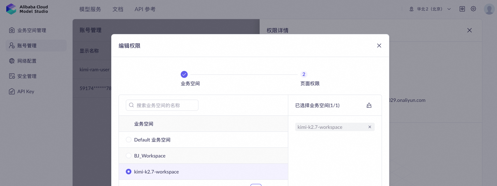
kimi-k2.7-workspaceRAM 用户登录百炼控制台（地域 cn-beijing）→ API-Key → 创建 API Key：
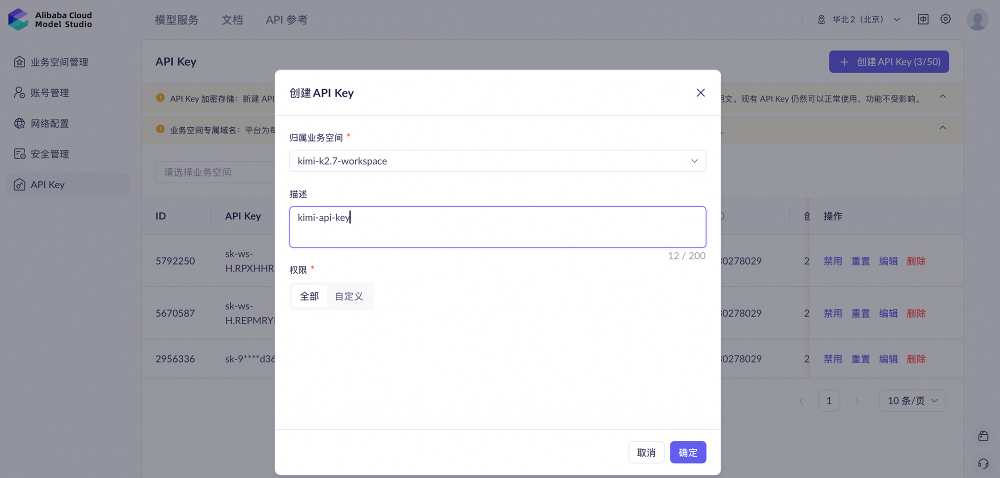
kimi-k2.7-workspace，描述填 kimi-api-key确定后弹出保存 API Key对话框：
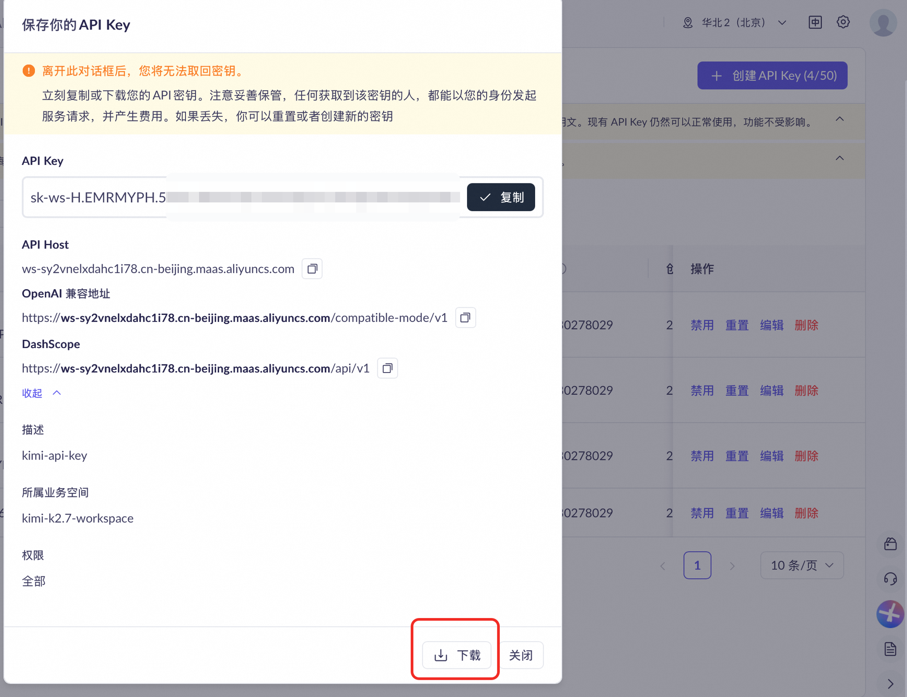
保存后即可以该 Key 调用 kimi-k2.7-code 模型。端点示例：
sk-ws-*************.*************************（脱敏示例）ws-sy**********.cn-beijing.maas.aliyuncs.comhttps://ws-sy**********.cn-beijing.maas.aliyuncs.com/compatible-mode/v1
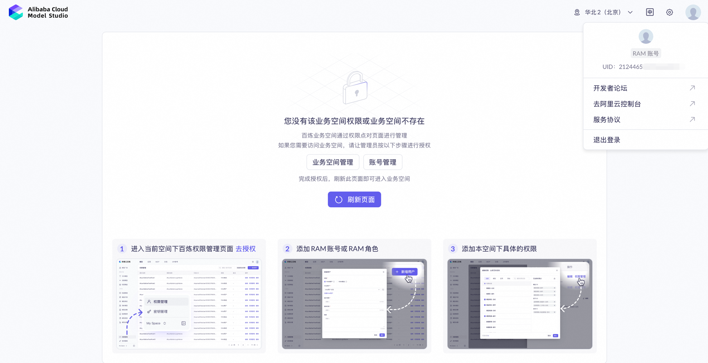
根因：该 RAM 用户未被添加到任何业务空间的成员列表。百炼不会自动继承 RAM 用户的任何权限。
解决：主账号在百炼控制台 → 切换到目标业务空间 → 账号管理 → 新增用户 → 选择该 RAM 用户 → 编辑权限勾选业务空间与模型权限。
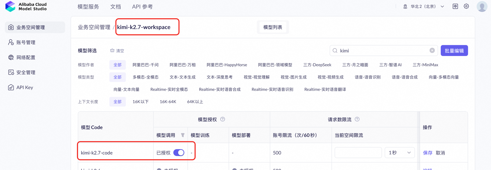
kimi-k2.7-workspace 内 kimi-k2.7-code 状态为"已授权"根因：RAM 子账户建的 API Key 所在的那个业务空间，没开通 kimi-k2.7-code 的调用权限。子业务空间默认什么都不授权。
排查思路（两跳走）
百炼控制台 → 左侧 API-Key 菜单。问题报的 Key 在这里能看到一行，里面"所归属业务空间"列会直接告诉你这个 Key 归在哪个空间下（例如 kimi-k2.7-workspace）。
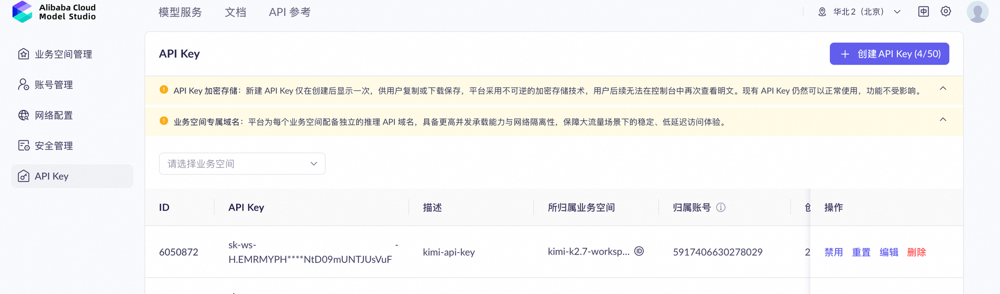
主账号切到该业务空间 → 左侧 模型列表 → 搜索 kimi-k2.7-code → 看"模型调用"列的开关状态：
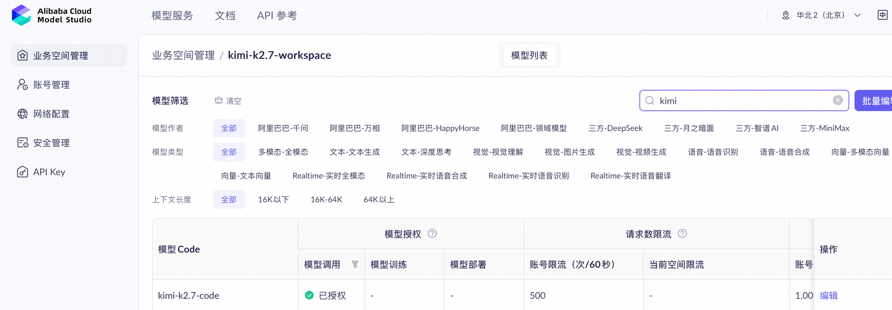
kimi-k2.7-workspace 内 kimi-k2.7-code 为"已授权"状态| 症状 | 可能根因 | 修复路径 |
|---|---|---|
| API Key 创建后立即被禁用 | 主账号欠费 / 业务空间被删除 / RAM 用户被移除 | 检查费用中心与业务空间状态 |
| 调用报 401 Invalid API key | API Key 复制不完整 / base_url 配错地域 | 重新下载 API Key，检查 base_url 与业务空间地域一致 |
| 调用报 400 InvalidParameter.ModelAccessDenied | API Key 归属业务空间未启用该模型 | 同问题 2，在业务空间 → 模型列表中开启对应模型 |
| 子业务空间配额耗尽 | 限流阈值过低或突发流量 | 业务空间 → 模型列表 → 调高请求数 / Token 限流 |
概念性内容（身份管理体系、角色矩阵、API Key 规则等）以官方文档为准，本指南不重复展开：
| 资源 | 链接 |
|---|---|
| 百炼权限管理（中文） | https://www.alibabacloud.com/help/zh/model-studio/permission-management-overview |
| 百炼权限管理 - 业务空间授权（中文锚点） | …#deef361444p3k |
| 应用 API 参考（控制台内嵌） | bailian.console.alibabacloud.com/cn-beijing?tab=doc#/doc/?type=model&url=2713036 |
| RAM 用户管理（国际站） | https://ram.console.alibabacloud.com/users |
| Manage workspace members（English） | …/help/en/model-studio/member-management |
| Get an API Key（English） | …/help/en/model-studio/get-api-key |
| AliyunBailianFullAccess policy details | …/aliyunbailianfullaccess |
本章将原"身份管理体系 / 角色权限 / API Key 规则"等概念性内容压缩为一张表，便于速查。详细字段与边界规则请以官方文档为准。
| 能力 | 超级管理员 含 AliyunBailianFullAccess | 业务空间管理员 | 普通用户 |
|---|---|---|---|
| 模型调用授权 / 限流 | ✅ | — | — |
| 用户管理 / 页面权限 / API Key | ✅ | ✅（限本空间） | — |
| 访问被授权的空间 / 页面 / 资源 | ✅ | ✅ | ✅ |
| OpenAPI 接口权限（数据/知识库/Prompt） | 需 RAM 加 AliyunBailianDataFullAccess | 同上 | 同上 |
| 空间类型 | 模型调用授权 | 限流设置 | 模型调优 |
|---|---|---|---|
| 默认业务空间 | 所有模型默认可调用 | ❌ 不可设置 | 所有支持调优的模型可调优 |
| 子业务空间 | 初始无任何模型权限，需手动开启 | ✅ 可设置请求数 / Token 限流 | 初始无权限，需手动开启 |
| 误区 | 正确理解 |
|---|---|
拥有 AliyunBailianFullAccess 就能调用所有模型 | 该策略仅授予管理操作能力，模型调用权限需在业务空间中单独开启 |
| RAM 用户创建后自动拥有默认空间权限 | 百炼不会自动添加 RAM 用户到任何业务空间，需手动添加 |
| 子业务空间和默认空间行为一致 | 子业务空间初始无任何模型权限，必须手动授权 |
| API Key 可以跨空间使用 | API Key 只能归属一个地域内的一个业务空间，不能转移 |
| 不同模型需要不同的 API Key | 无需为不同模型创建不同的 API Key |
| 功能 | 新加坡 ap-southeast-1 | 弗吉尼亚 us-east-1 | 中国香港 cn-hongkong | 法兰克福 eu-central-1 |
|---|---|---|---|---|
| 百炼首页 | 打开 | 打开 | 打开 | 打开 |
| 全局管理 | 打开 | 打开 | 打开 | 打开 |
| 成员管理 | 打开 | 打开 | 打开 | 打开 |
| 模型列表 | 打开 | 打开 | 打开 | 打开 |
| API Key 管理 | 打开 | 打开 | 打开 | 打开 |
| RAM 用户管理 | https://ram.console.alibabacloud.com/users（全局，不分地域） | |||
| 创建 RAM 用户 | https://ram.console.alibabacloud.com/users/new（全局，不分地域） | |||
bailian.console.alibabacloud.com/cn-beijing 域名（与上表 modelstudio.console.alibabacloud.com/... 域名不同，二者账号互通但页面路径略有差异）。